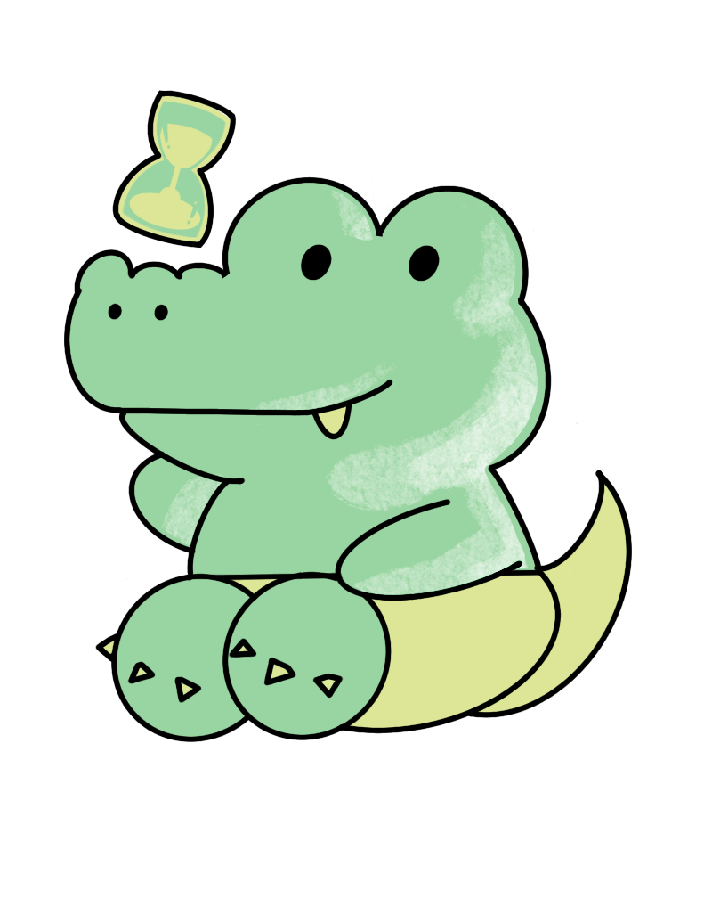
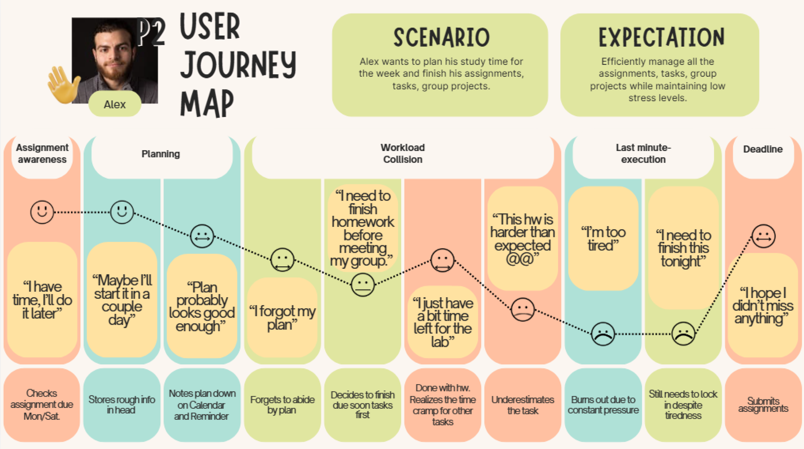

By Olivia, Jasmine, Justin, Khanh

College students often struggle with effective time management. This can be from balancing academic work, clubs, and personal projects. This can lead to stress and decrease the overall productivity.
College students often struggle with effective time manamgntTesting to see the different in font
Our goal is to develop an app that can help students manage their time more efficiently by organizing their workload, breaking their coursework time, and include motivations. The app will support better productivity habits, reduce stress and help students to stay on track with their academic goals.
Our target users are college students, part/full job people, anyone who would struggle with time management. As we focus on assignments, class, jobs, clubs, and other responsibilities.
Our target users are college students, part/full job people, anyone who would struggle with time management. As we focus on assignments, class, jobs, clubs, and other responsibilities.
Market Trend content
Age: 21
Occupation: Full Time College Student
Location: Gainesville, FL
Frustration: Overwhelmed trying to balance assignments and club activities
Goals: Stay organized and manage time more effectively
Age: 22
Occupation: Full Time College Student
Location: Columbus, OH
Frustration: Difficulty with prioritizing work
Goals: Staying on top of deadlines
Age: 24
Occupation: Full Time College Student
Location: Tampa, FL
Frustration: Difficulty breaking up large assignments and lose track of time
Goals: Manage schedule to complete task on time
Jane feels overwhelmed balancing assignment and club activities.
Alex has difficulty prioritizing work and staying on top of deadlines
Sophia struggles with managing large assignment and losing track of time

Alert students with upcoming assignments Helps them manage their study time with engaging reminders Smart reminders and wellness reminders
Predict the time required for assignments Convert task into calendar time zone Tells urgent alerts for appraoching deadlines
Reward users with points
Track progress with a gamification system
Friendly competitions with friends
provide habit based suggestions
Priorities ranking, based on importance or personal preference
Priorty-Based notifications
This section contains the final prototype for the Chomp Clock project.
This section contains the contribution and reflection for the Chomp Clock project.